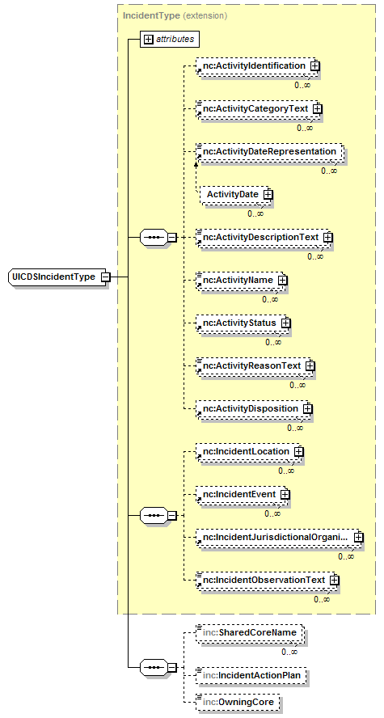
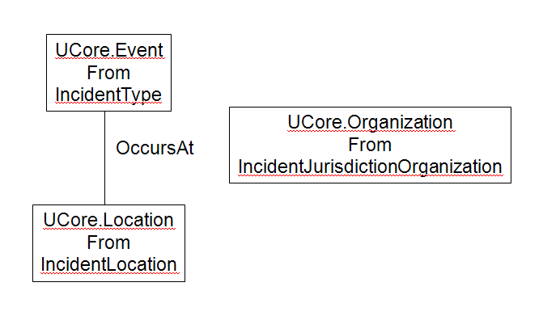

@Endpoint public class IncidentManagementServiceEndpoint extends Object implements com.saic.uicds.core.infrastructure.util.ServiceNamespaces
An incident is defined as the following data structure:

The UICDSIncidentType is derived from the NIEM IncidentType and extended with elements to represent UICDS specific items which are essentially read-only for clients. The following elements are the only elements in the NIEM IncidentType that UICDS needs to have values for. All other elements in this structure can be used in accordance with NIEM as needed by the clients.
LatitudeCoordinateType Definition: A measurement of the angular distance between a point on the Earth and the Equator.
LatitudeCoordinateType Usage: Information Values range from -90 degrees (inclusive) at the South Pole to +90 degrees (inclusive) at the North Pole. The value is 0 at the Equator.
LongitudeCoordinateType Definition: A measurement of the angular distance between a point on the Earth and the Prime Meridian.
LongitudeCoordinateType Usage: Values range from -180 degrees (inclusive) at the International Date Line to +180 (exclusive) just west of the International Date Line. The value is 0 at the Prime Meridian.
The value of the ActivityCategoryText be consistent with the local incident typing conventions or should be one of the standard Event What types that are defined in the UCore 2.0 specification at the UCore site or in the UCore Taxonomy. The following is the current list of UCore Event types:
<IncidentEvent>
<ActivityIdentification>
<IdentificationID>F01103070100</IdentificationID>
<IdentificationCategoryDescriptionText>http://fire.dept.us/ReportManager#incident</IdentificationCategoryDescriptionText>
<IdentificationJurisdictionText>Fire Department</IdentificationJurisdictionText>
</ActivityIdentification>
<ActivityCategoryText>FIRE/BUILDING</ActivityCategoryText>
<ActivityReasonText>INCIDENT_TYPE</ActivityReasonText>
</IncidentEvent>
The IncidentEvent array can also be used to simply designate that an application has received the
incident and report its local incident identifier as in the following example. In this example
the combination of ActivityCategoryText and ActivityReasonText indicates that this event captures
the fact that Fire Report Manager application received this incident. The data in the
ActivityIdentification element indicates that the Fire Report Manager server at
http://fire.dept.us/ReportManager received the incident and created an entry with the local
identifier F01103070100 in the incident database or collection.
<IncidentEvent>
<ActivityIdentification>
<IdentificationID>F01103070100</IdentificationID>
<IdentificationCategoryDescriptionText>http://fire.dept.us/ReportManager#incident</IdentificationCategoryDescriptionText>
<IdentificationJurisdictionText>Fire Department</IdentificationJurisdictionText>
</ActivityIdentification>
<ActivityCategoryText>Fire Report Manager</ActivityCategoryText>
<ActivityReasonText>RECEIVED</ActivityReasonText>
</IncidentEvent>
For the IncidentJurisdictionOrganization it is recommended that the following elements contain values:
The Incident Management Service creates a UCore digest for each incident when it is created and updates the digest each time the incident is updated. The main components of the digest are shown in the following diagram: 
The UCore.Event element is populated from data in the main part of the IncidentType. The UCore.Location will contain a GeoLocation element for each LocationArea in the IncidentLocation and a PhysicalAddress for each LocationAddress. The following table shows a mapping of data elements.
IncidentType to UCore Digest Mapping:
| IncidentType Element | Digest Element |
|---|---|
| IncidentType.ActivityDescriptionText | Event.Descriptor |
| IncidentType.ActivityName | Event.Identifier |
| IncidentType.ActivityCategoryText | Event.What (default "Event") |
| IncidentType.ActivityDateRepresentation | OccursAt.TimeInstant |
| IncidentType.AreaPolygonGeographicCoordinate | Location.GeoLocation.Polygon LinearyRing |
| IncidentType.AreaCircularRegion | Location.GeoLocation.Polygon CircleByCenterPoint |
| first IncidentType.IncidentJurisdictionalOrganization.OrganizationName | Organization.Name |
| additional IncidentType.IncidentJurisdictionalOrganization.OrganizationName | Organization.AlternativeName |
| ContactEmailID IncidentType.IncidentJurisdictionalOrganization.OrganizationPrimaryContactInformation | Organization.ContactInfo.Email |
| ContactTelephoneNumber IncidentType.IncidentJurisdictionalOrganization.OrganizationPrimaryContactInformation | Organization.ContactInfo.Phone |
When incidents are created from CAP messages values are copied from the CAP message to instantiate a new UICDSIncidentType. The following table shows which CAP elements are copied to the new UICDSIncidentType structure. The CAP message used to create the incident is not saved as a work product when creating an incident.
CAP to Incident Element Mapping:
| CAP Element | Incident Element |
|---|---|
| alert.event (if no event then alert.identifier) | ActivityName |
| alert.info:category | ActivityCategoryText |
| alert.info:description | ActivityDescriptionText |
| alert.sent | ActivityDateRepresentation |
| alert.info.area.addresses | IncidentLocation.LocationAddress.AddressFullText |
| alert.info.area:polygon | IncidentLocation.LocationArea:AreaPolygonGeographicCoordinate (array of) |
| alert.info.area.circle | IncidentLocation.LocationArea.AreaCircleRegion (array of) |
The Incident Management Service manages UICDS work products of type "Incident".
NS_AgreementService, NS_AlertService, NS_BroadcastService, NS_DirectoryService, NS_IAPService, NS_Incident, NS_IncidentCommandStructureService, NS_IncidentManagementService, NS_InterestGroupService, NS_LEITSCService, NS_LoggingService, NS_MapService, NS_NotificationService, NS_OasisCAP, NS_ProfileService, NS_ResourceInstanceService, NS_ResourceManagementService, NS_ResourceProfileService, NS_SensorService, NS_TaskingService, NS_WorkProductService| Constructor and Description |
|---|
IncidentManagementServiceEndpoint() |
| Modifier and Type | Method and Description |
|---|---|
org.uicds.incidentManagementService.ArchiveIncidentResponseDocument |
archiveIncident(org.uicds.incidentManagementService.ArchiveIncidentRequestDocument request)
Archives an incident by removing it and all of the associated work products.
|
org.uicds.incidentManagementService.CloseIncidentResponseDocument |
closeIncident(org.uicds.incidentManagementService.CloseIncidentRequestDocument request)
Closes an incident by making all of the associated work products inactive.
|
org.uicds.incidentManagementService.CreateIncidentResponseDocument |
createIncident(org.uicds.incidentManagementService.CreateIncidentRequestDocument request)
Allows the client to create an incident using the UICDSIncidentType as an input type.
|
org.uicds.incidentManagementService.CreateIncidentFromCapResponseDocument |
createIncidentFromCap(org.uicds.incidentManagementService.CreateIncidentFromCapRequestDocument request)
Allows the client to create an incident from a CAP version 1.1 element.
|
org.uicds.incidentManagementService.GetIncidentResponseDocument |
getIncident(org.uicds.incidentManagementService.GetIncidentRequestDocument request)
Allows the client to retrieve the incident work product by incident WorkProductIdentfication.
|
org.uicds.incidentManagementService.GetIncidentCurrentVersionResponseDocument |
getIncidentCurrentVersion(org.uicds.incidentManagementService.GetIncidentCurrentVersionRequestDocument.GetIncidentCurrentVersionRequest request)
Allows the client to retrieve the incident work product by incident work product ID.
|
org.uicds.incidentManagementService.GetIncidentListResponseDocument |
getIncidentList(org.uicds.incidentManagementService.GetIncidentListRequestDocument request)
Get a list of all the incidents on the core.
|
org.uicds.incidentManagementService.GetListOfClosedIncidentResponseDocument |
getListOfClosedIncident(org.uicds.incidentManagementService.GetListOfClosedIncidentRequestDocument request)
Get a list of incidents that have been closed with the CloseIncident operation.
|
org.uicds.incidentManagementService.ShareIncidentResponseDocument |
shareIncident(org.uicds.incidentManagementService.ShareIncidentRequestDocument request)
Allows the client to share an with another core.
|
org.uicds.incidentManagementService.UpdateIncidentResponseDocument |
updateIncident(org.uicds.incidentManagementService.UpdateIncidentRequestDocument request)
Allows the client to update the incident work product.
|
@PayloadRoot(namespace="http://uicds.org/IncidentManagementService",
localPart="ArchiveIncidentRequest")
public org.uicds.incidentManagementService.ArchiveIncidentResponseDocument archiveIncident(org.uicds.incidentManagementService.ArchiveIncidentRequestDocument request)
throws DatatypeConfigurationException
ArchiveIncidentRequestDocument - DatatypeConfigurationException@PayloadRoot(namespace="http://uicds.org/IncidentManagementService",
localPart="CloseIncidentRequest")
public org.uicds.incidentManagementService.CloseIncidentResponseDocument closeIncident(org.uicds.incidentManagementService.CloseIncidentRequestDocument request)
throws DatatypeConfigurationException
CloseIncidentRequestDocument - DatatypeConfigurationException@PayloadRoot(namespace="http://uicds.org/IncidentManagementService",
localPart="CreateIncidentRequest")
public org.uicds.incidentManagementService.CreateIncidentResponseDocument createIncident(org.uicds.incidentManagementService.CreateIncidentRequestDocument request)
throws DatatypeConfigurationException
CreateIncidentRequestDocument - DatatypeConfigurationException@PayloadRoot(namespace="http://uicds.org/IncidentManagementService",
localPart="CreateIncidentFromCapRequest")
public org.uicds.incidentManagementService.CreateIncidentFromCapResponseDocument createIncidentFromCap(org.uicds.incidentManagementService.CreateIncidentFromCapRequestDocument request)
throws DatatypeConfigurationException
CreateIncidentFromCapRequestDocument - DatatypeConfigurationException@PayloadRoot(namespace="http://uicds.org/IncidentManagementService",
localPart="GetIncidentRequest")
public org.uicds.incidentManagementService.GetIncidentResponseDocument getIncident(org.uicds.incidentManagementService.GetIncidentRequestDocument request)
throws com.saic.uicds.core.infrastructure.exceptions.InvalidProductIDException,
DatatypeConfigurationException
GetIncidentRequestDocument - com.saic.uicds.core.infrastructure.exceptions.InvalidProductIDException - The work product for the given work product identifier does
not exist.DatatypeConfigurationException@PayloadRoot(namespace="http://uicds.org/IncidentManagementService",
localPart="GetIncidentCurrentVersionRequest")
public org.uicds.incidentManagementService.GetIncidentCurrentVersionResponseDocument getIncidentCurrentVersion(org.uicds.incidentManagementService.GetIncidentCurrentVersionRequestDocument.GetIncidentCurrentVersionRequest request)
throws com.saic.uicds.core.infrastructure.exceptions.InvalidProductIDException,
DatatypeConfigurationException
GetIncidentCurrentVersionRequestDocument - com.saic.uicds.core.infrastructure.exceptions.InvalidProductIDException - The work product for the given work product identifier does
not exist.DatatypeConfigurationException@PayloadRoot(namespace="http://uicds.org/IncidentManagementService",
localPart="GetIncidentListRequest")
public org.uicds.incidentManagementService.GetIncidentListResponseDocument getIncidentList(org.uicds.incidentManagementService.GetIncidentListRequestDocument request)
throws DatatypeConfigurationException
GetIncidentListRequestDocument - DatatypeConfigurationException@PayloadRoot(namespace="http://uicds.org/IncidentManagementService",
localPart="GetListOfClosedIncidentRequest")
public org.uicds.incidentManagementService.GetListOfClosedIncidentResponseDocument getListOfClosedIncident(org.uicds.incidentManagementService.GetListOfClosedIncidentRequestDocument request)
throws DatatypeConfigurationException
GetListOfClosedIncidentRequestDocument - DatatypeConfigurationException@PayloadRoot(namespace="http://uicds.org/IncidentManagementService",
localPart="ShareIncidentRequest")
public org.uicds.incidentManagementService.ShareIncidentResponseDocument shareIncident(org.uicds.incidentManagementService.ShareIncidentRequestDocument request)
throws DatatypeConfigurationException
ShareIncidentRequestDocument - DatatypeConfigurationException@PayloadRoot(namespace="http://uicds.org/IncidentManagementService",
localPart="UpdateIncidentRequest")
public org.uicds.incidentManagementService.UpdateIncidentResponseDocument updateIncident(org.uicds.incidentManagementService.UpdateIncidentRequestDocument request)
throws DatatypeConfigurationException
UpdateIncidentRequestDocument - DatatypeConfigurationExceptionCopyright © 2012. All Rights Reserved.